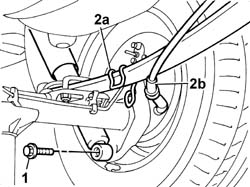
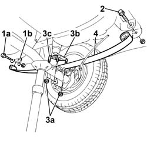
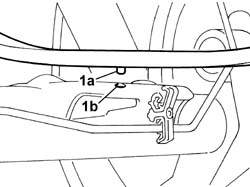
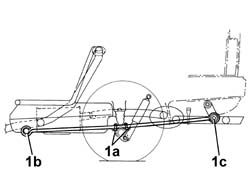

4420A60 l/h or r/h rear suspension leaf spring (one) - r+r
- Path
- Procedures > 44 SUSPENSION AND WHEELS > 4420 REAR SUSPENSION > 4420A rear dampers and springs > 4420A60 l/h or r/h rear suspension leaf spring (one) - r+r
- Kind
- repair procedure (removal / refitting; the operation number is the code)
- Applies to
- all engines; all production periods
- Interactive page
- https://sloeber94.github.io/elrnDB-fDbl/en/#/2584751
Applies to: all engines; all production periods; only with equipment: Cargo trim level
 Removing
Removing
 Refitting
RefittingPlace the car on a lift
Position a hydraulic column jack beneath the rear axle near the leaf spring to be removed in order to support the axle.
1. Undo the lower bolt securing the shock absorber to the rear axle.
Slightly lower the hydraulic wrench to unload the rear suspension
2. Unfasten bracket (2a) supporting parking brake cable (2b) from the leaf spring.

Applies to: all engines; all production periods; only with equipment: Cargo trim level
1. Undo rear bolt (1a) securing the left spring to shackles (1b).
2. Undo the front bolt securing the leaf spring to the body.
3. Undo nuts (3a) securing struts (3b) and bracket (3c) retaining the leaf spring to the rear axle.
4. Slightly lower the hydraulic jack and remove the leaf spring.

Applies to: all engines; all production periods; only with equipment: Cargo trim level
.
Applies to: all engines; all production periods; only with equipment: Cargo trim level
Refitting
Removing1. Refit the leaf spring by aligning ridge (1a) on the lower part of the leaf spring with hole (1b) on the rear axle.

Applies to: all engines; all production periods; only with equipment: Cargo trim level
Screw in the front bolt securing the leaf spring to the body without tightening.
Screw in the rear bolt securing the leaf spring to the shackles without tightening.
Fit the leaf spring bracket and struts to the rear axle.
Screw in the nuts securing the leaf spring retaining strut nuts without tightening.
Fasten the parking brake cable bracket to the leaf spring.
Slightly compress the shock absorber and tighten the lower retaining bolt.
 | Fastening | Component | Ø | Value (daNm) |
|---|---|---|---|---|
- | Bolt | REAR DAMPER | M14 x 1.5 | (lower) 11 |
Remove the hydraulic jack.
Carry out final tightening of the rear leaf spring fastenings under theoretical design load conditions Design load conditions on the front axle are achieved by ballasting the car (carry out this operation with the wheels fitted and the car on the ground or an appropriate lift). This is done by arranging loads iin the rear part of the car as described below.
Loads are calculated without the end stop buffer fitted; the values in brackets indicate loads to be applied with the end stop buffer fitted.
Panorama version = 175 kg (335 kg)
Van version = 290 kg (506 kg)
Van version (higher payload) = 440 kg (656 kg).
1. Tighten nuts (1a) securing the central leaf spring retaining struts to torque; tighten front bolt (1b) and rear bolt (1c) securing the leaf spring to torque.
| Fastening | Component | Ø | Value (daNm) |
|---|---|---|---|---|
1a | Nut | REAR LEAF SPRING | M12 x 1.25 | (centre U-bolt) 7.5 |
| Fastening | Component | Ø | Value (daNm) |
|---|---|---|---|---|
1b | Nut | REAR LEAF SPRING | M16 x 1.5 | (front) 18 |
| Fastening | Component | Ø | Value (daNm) |
|---|---|---|---|---|
1c | Nut | REAR LEAF SPRING | M12 x 1.25 | (rear) 8 |
